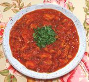

|
Alligator StewUSA - Southeast | ||||
| Serves: Effort: Sched: DoAhead: |
3 w/rice ** 1-1/2 hr Part |
This recipe has been optimized to have plenty of sauce, because Alligator is very expensive around here. Best to serve it with plenty of rice or pasta. The differences between Alligator and Chicken are still evident. | |||
|
|
1 4 1 2 2 ------ 12 8 1/3 1 1/4 ------ 1-1/2 1/2 1 |
# oz cl T T --- oz oz c t t --- T c t |
Alligator Meat (1) Onion Garlic Basil Cilantro -- Sauce Tomatoes Tomato Sauce (2) Water Paprika Pepper, black ------------- Olive Oil White Wine, dry Salt |
Prep - (25 min)
|